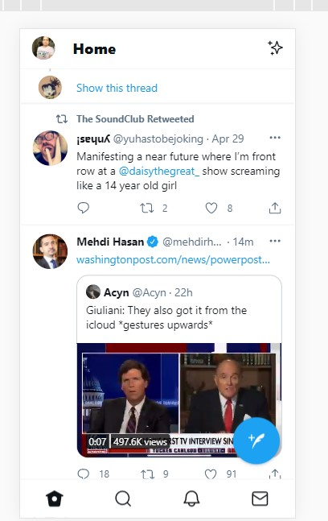
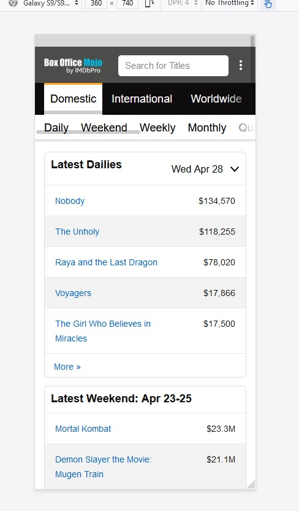
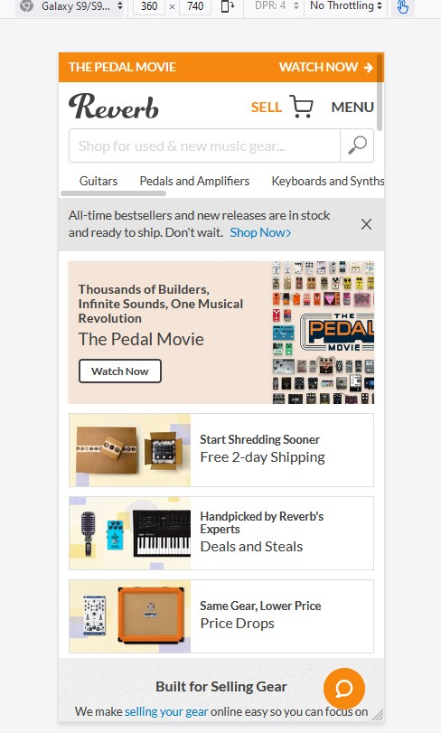

1. P.A.R.C. Proximity
twitter.com
Twitter's desktop version has many more examples of proximity, including grouping all the profile options to the left and all the trends to the right. The mobile version doesn't even try to replicate those features on the same window, opting intstead for a single scrolling feed. You can get to the profile options by tapping on your own picture, and the trending articles appear on a separate page accessible by clicking the magnifying glass. It's a pretty radical departure from the look of the desktop version but it is much cleaner than the facebook mobile site. The final remaining example of proximity is the way the interaction options are all grouped at the bottom of each individual tweet. Like, comment, share and retweet are all on the same row.
2. White Space and Clean Design
Box Office Mojo
boxofficemojo.com
This informational site recently overwent a long-overdue overhaul that finally included mobile support. The result is a beautiful study in simplicity and minimalism. The top earning films are presented in a very clean table full of padding. There is also a subtle color separation by prosenting every other row with a light shade of gray. It's almost inmperceptible but helps the eye stay on the intended row. The one critique i would have is the horizontal scroll bar under "daily, weekend" etc covers the text, and my persona
3. Rule of Thirds
Reverb
reverb.com
This commerce site has multiple examples of this rule in action. The first thing that grabs your attention is The Pedal Movie. The thumbnail for this feature is on the right 1/3, with the description and interactive button on the left 2/3. To offset this, the next three windows are offset with the thumbnails on the left 1/3. There are plenty of other features on this site that don't follow this principle: namely the search bar and the various browse sections (e.g., Gutars, Pedals). My understanding is those tools are for people familiar with the site and come with a purpose in mind. In order to keep the visitor engaged and informed, the designers gave prime real estate to windows using the rule of thirds to "sell" them on both reasons to stick around the site, as well as selling points on why you should buy from them.
